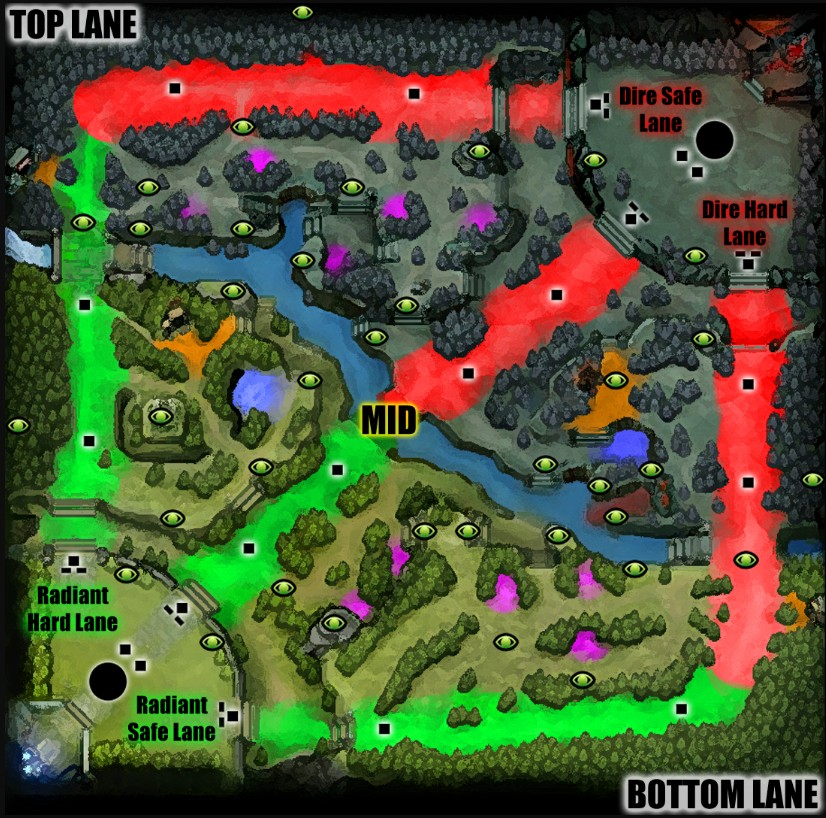
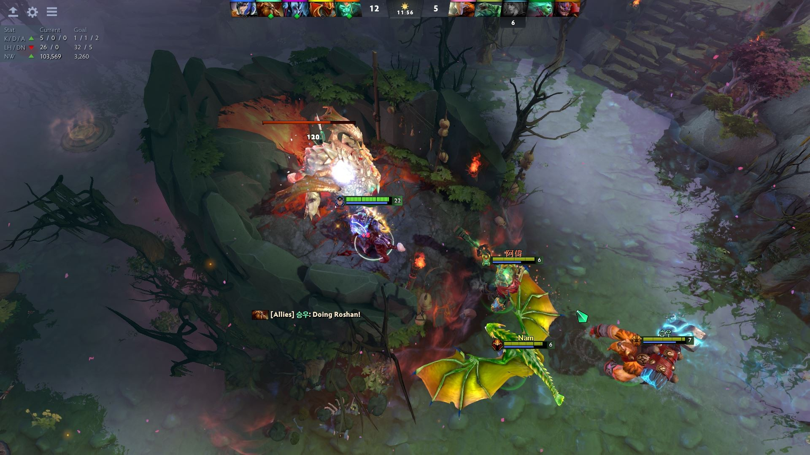
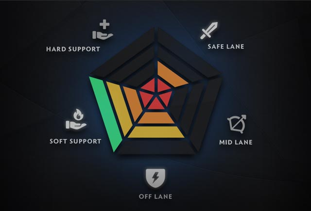

How To Play Doto2
What is Doto2?
Doto 2 is an online multiplayer game where you and four teammates choose from a roster of different heroes and, over the course of each match, gradually grow in strength and power until you’re strong enough to take down the enemy team’s Ancient – the glowing building in their home base.
Of course, the opposing team has their eye on your Ancient, too, and wants to smash it to smithereens. So the whole match is a strategic balancing act, as you decide what you need to do to gain advantage for your team, while also making sure the enemy doesn’t snowball out of control.
Many millions of hours of brainpower have gone into figuring out the optimal ways to do this, so there’s plenty to study – but, crucially, none of your teammates or enemies know how to play optimally, so really, it’s all about punishing your enemies’ mistakes while trying not to make too many of your own.
Doto2 Maps
The Doto 2 map is divided into two sides, Radiant and Dire. Radiant is on the left, and it’s a verdant, idyllic paradise. Over the river that runs diagonally from top left to bottom right, you’ll find the Dire lands on the right side of the map, all covered in bugs and stuff.
The map is also split into three lanes – top, middle, and bottom. The area between the lanes contains camps of neutral creeps, and is known as the jungle. Each team has three towers running down their side of each lane, which automatically attack enemy creeps and heroes within a certain radius. We’ll explain what creeps are in a bit, stay with us.
The towers closest to the river are called tier one towers; tier two towers are further back, halfway down the lane, and tier three towers stand at the start of each lane, in your base. There’s also a set of two tier four towers defending the Ancient itself, which sits in the middle of your base.
Tucked back in the bottom left and top right corners is the fountain, which heals your health and mana over time, and rapidly attacks any foes that dare venture inside. This is also where you can find the Base Shop, from which you can purchase most items.
Heroes can teleport to towers and outposts using a TP scroll. You start with one of these, and gain one every time you die. You can purchase more from the shop – try not to get caught without them, as you can also teleport to the fountain when you need to. However, TP scrolls take a certain amount of time to channel, so it’s possible to have your TP cancelled by an enemy if they catch you.
Doto 2 Creeps
Creeps – non-hero units – are the main source of gold and experience in the game. When a creep dies, it gives experience to its nearby enemies. Crucially, you only get gold from the creep if you deliver the killing blow, otherwise known as the last hit. You have to watch the health bar carefully and eyeball the exact moment to thwack the creep so you can secure this, which is a skill all on its own. You can also last hit your own friendly creeps to prevent your enemies from getting the money from the last hit, while also halving the experience they get from the creep. This is called denying..
Roshan
Roshan is a big ol’ beast hanging out in his own special pit in the middle of the river. He’s a neutral creep, but he’s incredibly difficult to take down, often requiring several heroes to do so in a speedy fashion. When killed, he drops the Aegis of the Immortal, which is an item that grants the bearer a second life; if they die, they are resurrected in place after a short delay. The Aegis expires after five minutes. Roshan also drops additional items depending on how many times he’s been killed already in that game.
Doto2 Heroes
The vast number of available heroes is what ensures every single game of Dota 2 presents a unique challenge. Certain heroes are natural counters to other heroes, and certain heroes are more suited to particular playstyles.
You’ve got melee, ranged, heroes that do high damage with their right-click, and heroes that use spells to devastating effect. As you accumulate experience throughout the game, you level up, and can assign a point to one of your abilities. Every hero has a powerful ultimate that becomes available to skill at level six.
Roles
There are five heroes on each team, and there are five different roles that every team needs to cover: two supports (positions four and five), offlaner (position three), mid (position two), and carry (position one). The role you play in each match determines which lane you begin in, and what is expected of you throughout the game.
